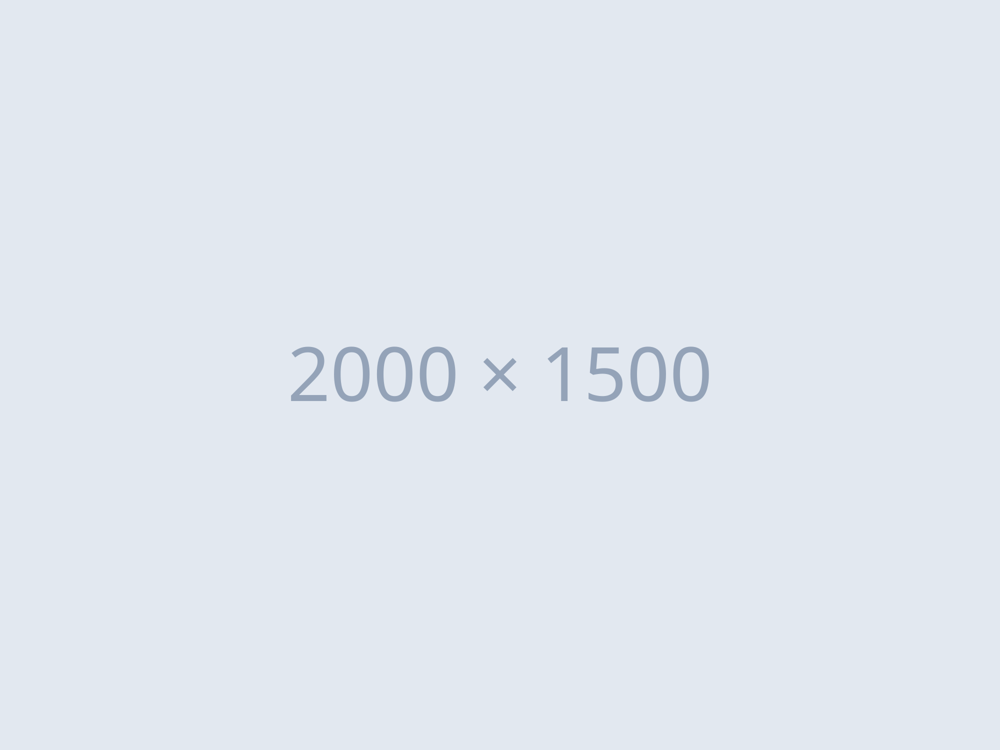

Latest · Letter No. 214 Home
The kitchen table is the only office I need
Why I gave the desk away, what lives in the one drawer, and the 7 a.m. hour that pays for the whole day.
 Elin FairlieMar 14, 20278 min read
Elin FairlieMar 14, 20278 min read